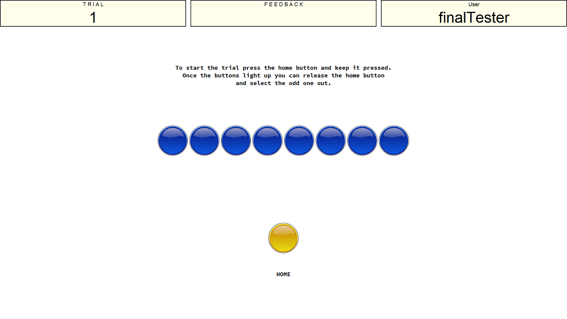
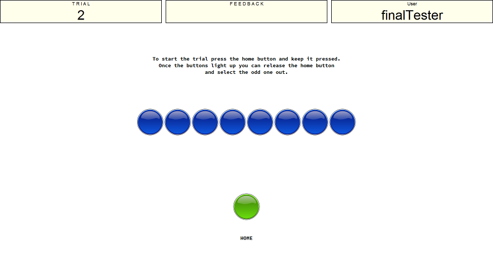
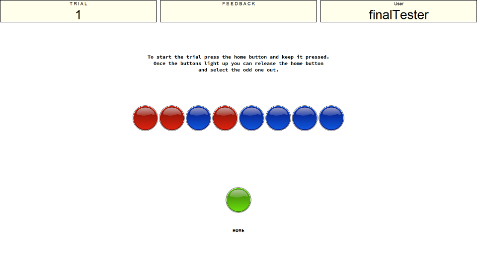

Instructions
This is the odd man out task. You are required to locate the odd-one-out out of an array of three lights that will turn on. The images below show what this task looks like in its three phases. The first image shows the task at rest. To begin a trial you need to use the mouse and click on the 'HOME' button.

You need to keep the home button pressed until the lights appear on the 8 target circles in the center. The home button will change from yellow to green while it is pressed. Image two shows what the screen will look like while you are pressing on the home button.

After a short random amount of time the lights will appear (see image three). At this point you can release the home button and move the mouse to click on the light you think is the odd-one-out. There will always be an odd-one-out based on location. For example in this image there are two next to each other and then one a little bit further away (the red circle furthest right), it is this light you would need to click to be correct.
